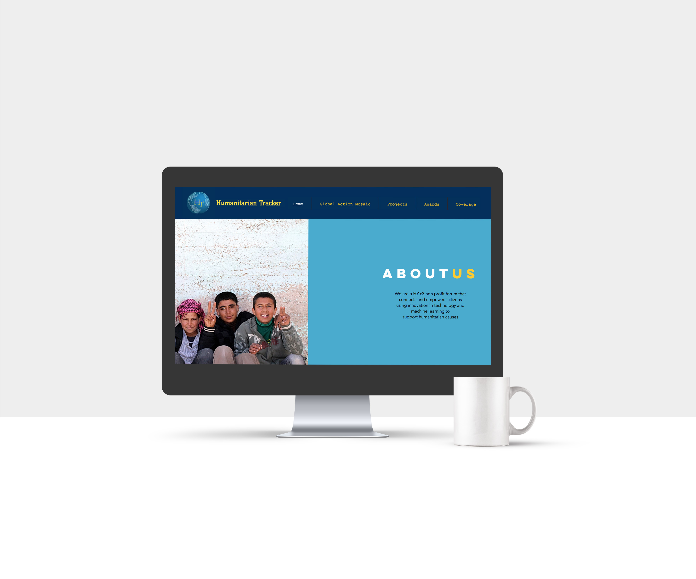
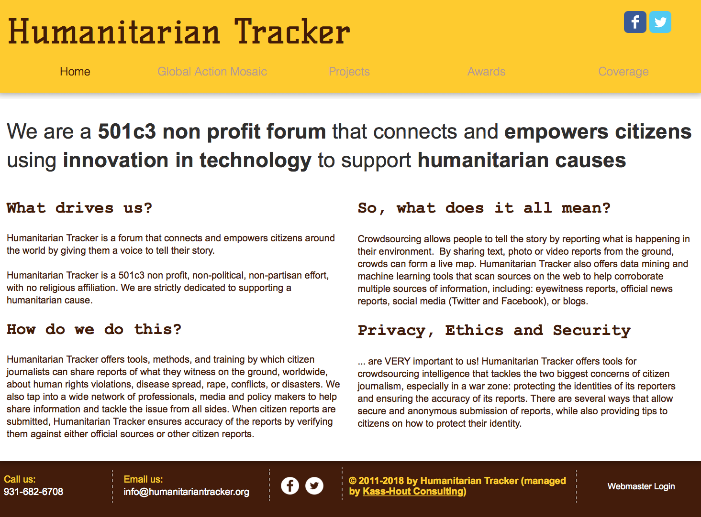
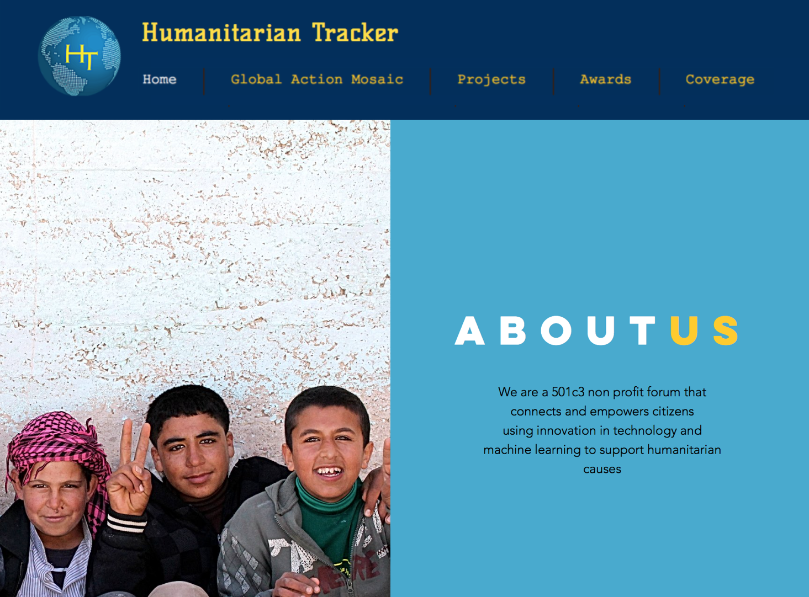
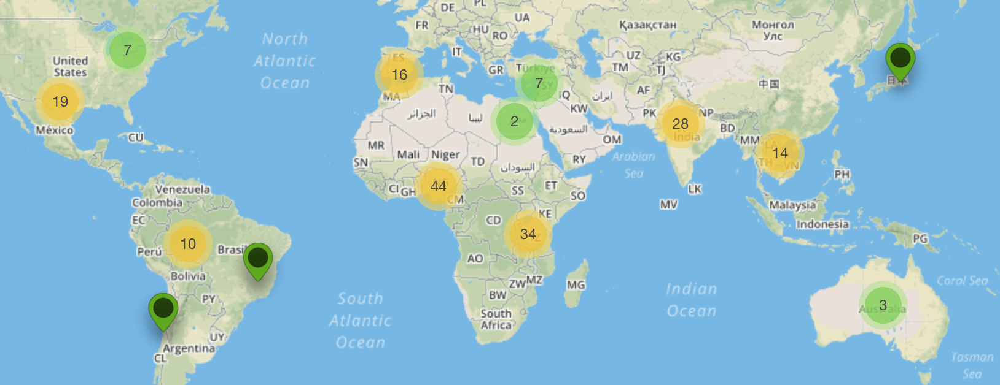

Duration: 1+ year
Type: Nonprofit
Role: Design and Partnership Lead
Tools: Adobe Creative Suite
After updating the website and brand to catch up to market trends, I took the lead on expanding our Global Action Mosaic in partnership with the United Nations Foundation. My work has been recognized by the former CTO of the Obama Administration at the 2019 United Nations General Assembly SDG Action Zone.
My goal is continue supporting innovation in emerging markets and I'm always looking for organizations to partner with.


before and after photos of the website update
I'm using design and artificial intelligence to accelerate social good.
Currently, I'm building the Global Action Mosaic - a platform crowdsourcing projects that align with UN's Sustainable Development Goals. As our project entries grow, my role expands to connect individuals to our machine learning and data mining resources. This role entails design, project management, and building internal as well as external teams.

visualization of projects logged around the world
I got involved by offering to redesign the website. Then, I was trusted to update the brand, followed by presenting at the AWS Imagine Conference for nonprofits. One thing led to another and next thing I knew, I was fulfiling a dream of being at the United Nations during its General Assembly Week. Surreal.
It's like working for a startup within a startup. While my work keeps me on my toes and adapting to new challenges as our sights expand, I'm learning the importance of establishing metrics - not only to measure success but as a north star to keep our organization on track. After all, we're on a time crunch to achieve the 17 sustainable development goals by 2030.
Version 4.1 - Updated April 2020